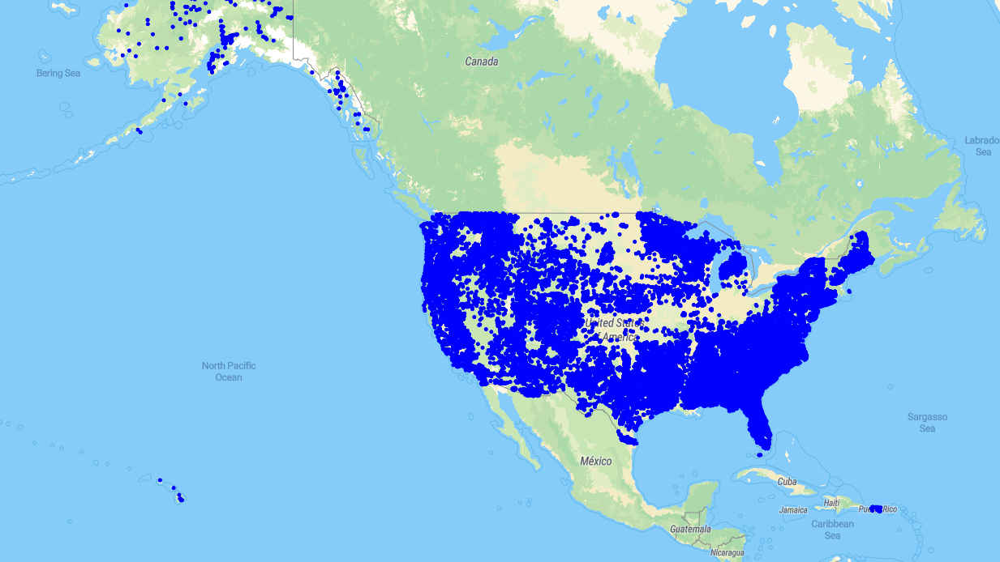

Wildfires
A Flask-based web application that maps wildfire occurrences across the USA from 2000-2010, leveraging Docker and PostGIS for spatial data handling.

Tools and technologies Used:
- Programming Languages: Python, HTML
- Framework: Flask
- Database: PostgreSQL with PostGIS extension
- Development Environment: Visual Studio Code
- Containerization: Docker
- Data Source: Wildfire data in CSV format (2000-2010)
Key Concepts:
- Spatial Data Management: The application handles spatial data using PostGIS, a spatial database extender for PostgreSQL, enabling advanced geographic queries.
- Containerization with Docker: Utilized Docker to create isolated environments for setting up PostGIS and running the Flask application, ensuring consistency across different development and production environments.
- Data Visualization: The app imports wildfire data into PostgreSQL and then visualizes it by rendering a map layer, allowing users to see the distribution and frequency of wildfires over the specified time period.
Achievements:
- Successful Integration of PostGIS: Integrated PostGIS with PostgreSQL, enabling efficient storage and querying of spatial data related to wildfires.
- Automated Environment Setup: Created Docker containers to automate the setup of the development environment, including the installation of PostGIS and configuration of the PostgreSQL database.
- Dynamic Map Rendering: Implemented dynamic map rendering, where the application overlays wildfire data onto a map, providing a visual representation of wildfire occurrences across the USA.
Lessons Learned:
- Advanced Geographic Information Systems (GIS): Gained a deeper understanding of GIS concepts and how to leverage PostGIS for spatial data manipulation.
- Containerization Best Practices: Learned the importance of containerization in modern web development, particularly in managing dependencies and ensuring environment consistency.
- Data Visualization Techniques: Improved skills in data visualization, particularly in representing large datasets on interactive maps, making complex data more accessible and understandable.